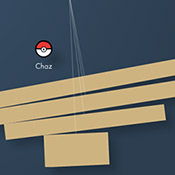
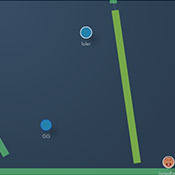

Welcome to Bonk.io!
What's Bonk.io?
Bonk is a multiplayer physics game, for up to eight players at once. Push your opponents off the edge of the level, the last man standing wins!
Battle your friends or anyone from anywhere in the world in last man standing or team based matches. Bonk.io is a game of strategy as well as raw skill, position yourself carefully, and dodging an incoming collision can be as effective as smashing into your enemies!
Use the arrow keys to move, and hold X to make yourself heavier. When you are heavy, you have much more momentum, so you will bash enemies much further, and you are much harder to push around. But you will also be much less maneuverable!
Use the in-game level editor to easily create your own maps, and then play on them! Play on hundreds millions of custom maps created by the community, and upload your own for others to play on.
Use the quick play feature to quickly get into a game, or create custom games and set it up however you like.
Bonkio is being constantly updated with new features and improvements, so check back often! And most of all - have fun!
The New Version
This version of the game, previously known as "Bonk 2", is now the main version of the game. Unlike the previous version it does not use Flash, and should be future-proof for years to come.
Please use your existing username and password to log in. All accounts, maps and skins have transferred over.
Your friend list, however, has not. To prevent abuse, in order to add someone as a friend you must send them a friend request and they must accept it. You can view a list of your old friends from the Flash version at the bottom of the friends list, by clicking 'Friends From Flash Version' and sending each one a friend request.
Flash to HTML5
Sadly, Adobe Flash reached the end of its life in 2020. Bonk.io was built in Flash, and if left unchanged would have been lost forever in early 2021.
Originally I set out to create a sequel, "Bonk 2", that would be written in HTML5 and take Bonk beyond the Flash Apocalypse. Along the way I discovered how difficult it is to take something that's grown larger than you ever anticipated and attempt to improve it.
The new game attempted far too much, and didn't have the charm of the original. In addition, while many players were excited for a sequel, most simply didn't want the original game to go away.
So it was decided to instead create a more faithful reproduction of the original. This would also mean all user accounts, maps and skins can carry over to the new version. This new version is the state the game is currently in today.
-Chaz
Developer